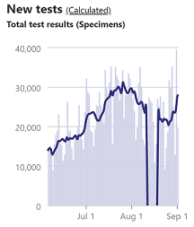

[NC] Backfill NCDHHS historical data
Issue number 811
vlucent opened this issue on September 3, 2020 at 9:09 am
Labels Data quality stale
North Carolina
As you are aware, NC announced a major correction in their testing data on 8/12.
The error reduces NCDHHS’s official count of cumulative tests performed from 2,044,727 to 1,823,283. It did not impact the case count total or the percent positive calculation that NCDHHS reports. Going back to the beginning of the reporting error, the data will be updated to reflect the accurate number of tests performed.
The NCDHHS data does appear to be updated while the COVID19Tracking project data has not, which still records a negative test change for that day, resulting in awkward 7-day average plots:

Comments
This issue has been closed because it was stale for 15 days, and there was no further activity on it for 10 days. You can feel free to re-open it if the issue is important, and label it as “not stale.”
This issue has been automatically marked as stale because it has not had recent activity. It will be closed if no further activity occurs. Thank you for your contributions!